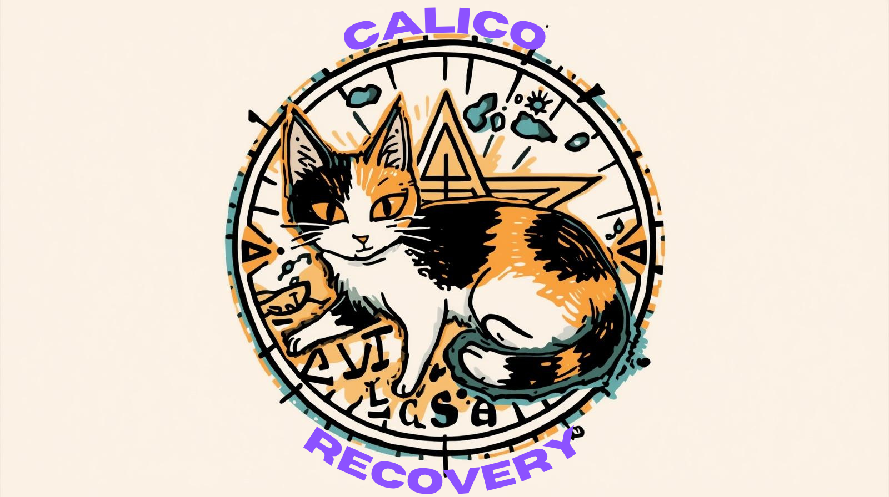

Looking for Front/Back End and UI/UX Devs
We Have a Low Balance
Please consider donating — this app is supported by users like you.
If you already have cryptocurrency, you can donate directly. If not, you can get some at Coinbase, Kraken, or CashApp.
You use your computer power to generate cryptocurrency for us. It costs nothing except leaving your computer on.
It is a recovery app I am starting as a person in the middle of my own recovery journey.
bc1quwzpckpa43nvzsjjxk9n9p3hv4kj28fp7r32fp
If you have no crypto you can buy some using a crypto ATM(great), cashapp(my favorite), paypal(good runner up), or coinbase(ew)
If you have BTC but want to donate XMR look into EigenWallet where you can buy/sell XMR for BTC peer2peer